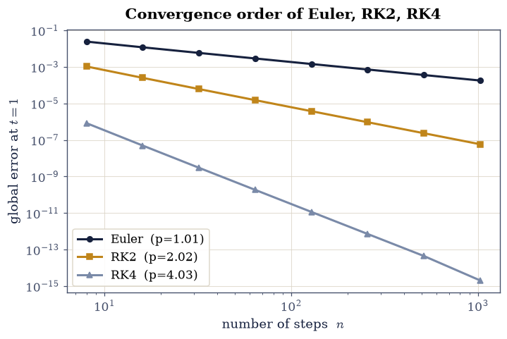
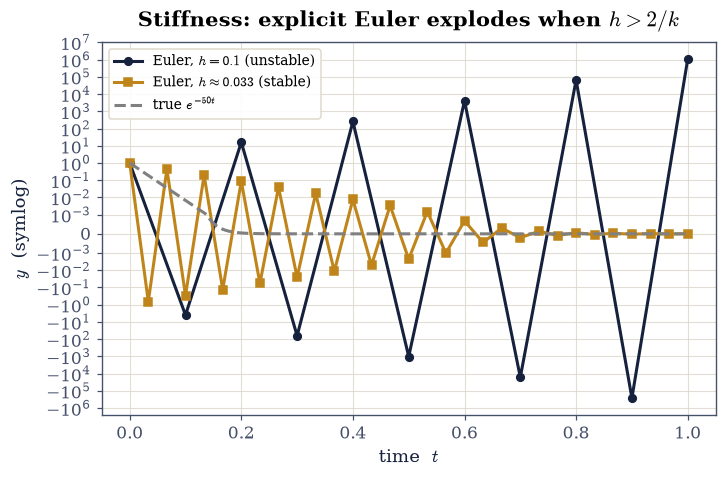
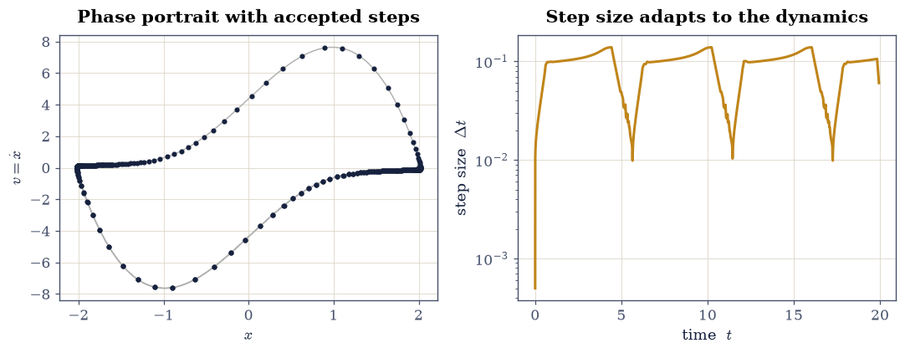
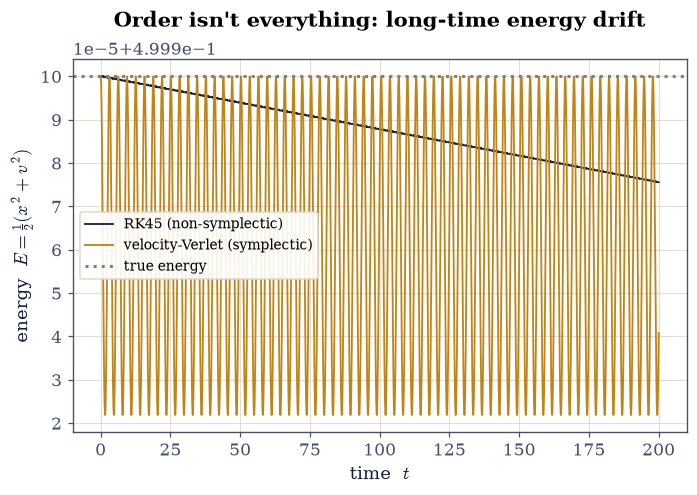
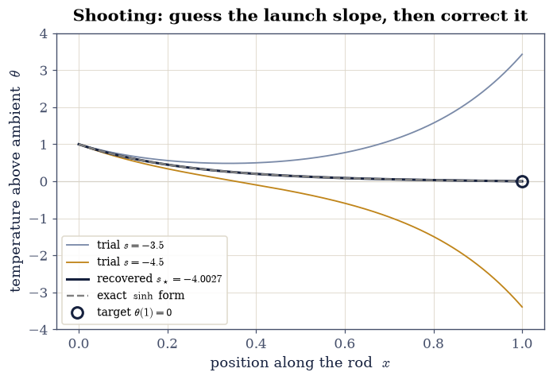
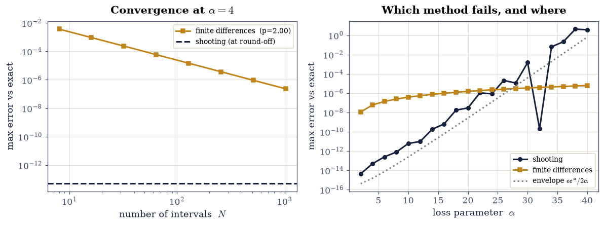

0.7 Solving Ordinary Differential Equations#
Notebook overview#
Every simulation in this course has secretly been an exercise in solving
ordinary differential equations: the projectile of
§1.1, the chaotic pendulum
of §1.3, the orbits of
§1.4, the phase flow of
§2.3: all of them
handed their
equations of motion to scipy.integrate.solve_ivp and trusted the trajectory
that came back. This notebook is the general theory behind that trust. It builds
the integrators from the ground up, asks what makes one order better than
another, and then confronts the two failure modes that the order alone never
predicts: stiffness, which can make a perfectly accurate explicit method
explode, and the slow energy drift of a high-order method over long times,
the phenomenon §1.6 first
showed in one case and which we now explain in general.
We start from Euler’s one-line tangent step and work up to Runge–Kutta, measure
convergence orders exactly as §0.3 measured
them for quadrature, then
meet the new idea that separates a textbook solver from a production one: that
stability is a constraint distinct from accuracy, and that taming a stiff
problem means going implicit, which, satisfyingly, turns each step into a
root-find of the kind built in §0.2. We finish with the
adaptive step-size control that solve_ivp actually uses, and a hard-won
lesson from §1.6:
for a Hamiltonian system over long times, the geometry of a method matters more
than its order.
Two exercises near the end then change the question rather than the method. Everything before them is an initial-value problem: the whole state is known at one instant, and the solver marches. A great many physical problems instead pin one condition at each end of an interval, a rod clamped to a temperature at both ends being the plainest example, and marching is then impossible, because half of the starting state is missing. Two classical techniques compete for that job and we build both: shooting, which guesses the missing datum, marches, and root-finds on the miss (§0.2), and finite differences, which abandons marching and solves every grid point at once. They fail in opposite regimes, which is the whole reason to know both.
There are no animations here: these are studies of error, step size, and energy, which a still plot reads more honestly than a moving one would.
How to read the checks. Each exercise ends with a
validatecall against an independent fact: an exact solution \(e^{-t}\), a predicted convergence order, a stability threshold. A ✓ is strong evidence; a ✗ is a prompt to locate the discrepancy, not a verdict.
Scope. A working review, not a course in numerical ODEs. The standard reference is Hairer, Nørsett & Wanner, Solving Ordinary Differential Equations [HNorsettW93]; see also Press et al., Numerical Recipes, ch. 17 [PTVF07]. The long-time geometry is the subject of §1.6.
Theory in brief#
The initial-value problem#
Everything here solves the initial-value problem: given a rate law and a starting state, find the trajectory. Written for a (possibly vector) state \(\mathbf y\),
A higher-order ODE is not a separate case: it reduces to this one by stacking derivatives into the state, the trick the course has used since §1.1. The oscillator \(y''=-y\), for instance, becomes the first-order system for \((x, v) = (y, y')\),
so a single solver for Eq. 43 handles everything.
Euler’s method and the order of a method#
The simplest integrator follows the tangent: knowing the slope \(\mathbf f\) at the current point, step along it by \(h\),
It is first order, and what “order” means here is exactly what it meant for quadrature in §0.3: a method has order \(p\) if its global error over a fixed interval scales as \(O(h^p)\),
so \(p\) is again minus the slope of a log–log error-vs-\(n\) plot. (The local error made in one step is one power higher, \(O(h^{p+1})\); accumulating \(\sim 1/h\) steps costs that one power.)
Runge–Kutta: sampling the slope#
Euler is crude because it trusts the slope at the start of the step for the whole step. Runge–Kutta methods do better by sampling \(\mathbf f\) at intermediate points and combining the samples so the leading error terms cancel. The midpoint rule (RK2) takes a half-step to probe the slope at the middle; the classic RK4 blends four such samples,
with \(\mathbf k_1=\mathbf f(t_n,\mathbf y_n)\), \(\mathbf k_2=\mathbf f(t_n+\tfrac h2,\mathbf y_n+\tfrac h2\mathbf k_1)\), \(\mathbf k_3=\mathbf f(t_n+\tfrac h2, \mathbf y_n+\tfrac h2\mathbf k_2)\), \(\mathbf k_4=\mathbf f(t_n+h,\mathbf y_n+h \mathbf k_3)\). RK4 is fourth order and the general-purpose default for non-stiff problems. (The coefficients are fixed by matching the Taylor expansion of the exact flow through \(O(h^4)\); Hairer, Nørsett & Wanner, Solving Ordinary Differential Equations, develop the order conditions in full.)
Stability is not accuracy: stiffness#
Order controls how fast the error falls as \(h\to0\); it says nothing about whether a given \(h\) blows up. For the decaying test equation \(y'=-k y\) (true solution \(e^{-kt}\to0\)), one Euler step multiplies \(y\) by \(1-kh\), so the numerical solution stays bounded only when
A stiff system (one with widely separated timescales, i.e. a large \(k\)) therefore forces an explicit method to take absurdly small steps for stability, long after accuracy stopped demanding it. This is the key new idea of the notebook, and order cannot fix it.
Implicit methods and adaptivity#
The cure is to evaluate the slope at the end of the step instead. Backward Euler,
has \(\mathbf y_{n+1}\) on both sides, so each step is an equation to be solved
(a root-find, §0.2, or, for a nonlinear \(\mathbf f\), a Newton iteration
per step); the payoff is unconditional stability at any \(h\). Production stiff
solvers (BDF, Radau) are implicit for exactly this reason. Separately, real
solvers do not use a fixed \(h\) at all: they estimate the local error with an
embedded pair of methods (RK45 / Dormand–Prince) and shrink or grow \(h\) to hold
it under a tolerance, spending effort where the solution actually moves. That is
what solve_ivp does. And, as
§1.6 showed and we revisit at
the end,
none of this captures long-time geometry: a non-symplectic method, however
high its order, slowly drifts a Hamiltonian system’s energy.
The other problem class: boundary values#
One assumption has been silent in all of the above, and it is worth naming before breaking it: that the entire state is known at a single instant, so that the solution can be marched away from it. A boundary-value problem (BVP) denies that. On an interval \([a,b]\) a second-order equation may instead be posed as
with one condition at each end rather than two at the same end. Reducing to first order does not help: the state at \(x=a\) is only half known, since \(y(a)\) is given but \(y'(a)\) is not, and no amount of stepping can invent it. This is a genuinely different problem class, not a variant of Eq. 43, and it behaves differently too: an initial-value problem with a Lipschitz right-hand side has exactly one solution, guaranteed, whereas a boundary-value problem may have none, one, or infinitely many.
Two classical techniques answer it, and the standard references teach them side by side (Numerical Recipes, ch. 18 [PTVF07]). Shooting keeps every tool built above: treat the missing slope \(y'(a)=s\) as an unknown, integrate the resulting IVP all the way to \(b\), and record by how much the far boundary condition is missed,
Solving the BVP is then nothing but finding a root of \(\Phi\), which is the subject of §0.2: a BVP is an IVP plus a root-find. Finite differences take the opposite route and give up marching entirely. On a grid \(x_i = a + ih\) they replace \(y''\) by a three-point second difference. It comes from the same Taylor-cancellation recipe that produced the first-derivative stencils of §0.3, only now \(y(x\pm h)\) are added rather than subtracted, so the odd-order terms cancel against each other and the second derivative is left at \(O(h^{2})\):
impose \(y_0 = A\) and \(y_N = B\) at the ends, and solve the coupled algebraic system for all interior values simultaneously. For a linear \(g\) that system is tridiagonal, so it costs \(O(N)\) to solve and nothing iterates at all. (When \(g\) is nonlinear the same system is solved by sweeping it repeatedly toward consistency, which is why this family also travels under the name relaxation; the Dirichlet problem relaxed in §3.4 is the two-dimensional member of it.)
Neither technique dominates. Shooting is cheap, reuses everything above, and handles nonlinearity without extra thought, but it inherits the conditioning of the initial-value problem it manufactures, so it degrades badly whenever the equation carries a fast-growing mode. Finite differences are indifferent to that growth, being anchored at both ends by construction, but they converge only at the order of their stencil, \(O(h^2)\) here. Exercises 8 and 9 build both on the same problem and locate the crossover.
Setup#
Setup holds the imports and two instruments. fit_order is the log–log slope
fit that turns an error-versus-step-count series into a convergence order.
secant is the root-finder built from scratch in
§0.2, restated verbatim here because Exercise 8 turns a
boundary-value problem into a root-find and then needs one: root-finding was
earned there, and is a tool here.
Every integrator and every boundary-value solver in this notebook is yours to
write — explicit Euler in Exercise 1, the midpoint rk2 and the classic rk4
in Exercise 2, the implicit backward_euler_linear in Exercise 5, the
symplectic velocity-Verlet of
§1.6 in Exercise 7, the
shooting integrator in Exercise 8, and the tridiagonal finite-difference
solver in Exercise 9. Nothing below integrates anything.
The Setup below holds this notebook’s data and instruments — nothing you are asked to build. It is collapsed so the building stays yours; expand it whenever you want the details.
Exercise 1 — Euler’s method, and reducing a higher-order ODE#
We meet the integrator on the problem with the simplest possible exact answer. The scalar IVP \(y' = -y\), \(y(0) = 1\) has the solution \(y(t) = e^{-t}\), so any error is laid bare against a known curve. Euler’s tangent step Eq. 44 turns the rate law into a recurrence; it should crawl toward \(e^{-t}\) as the step shrinks. The same machine also handles second-order ODEs once they are written as first-order systems, Eq. 43: the oscillator \(y''=-y\) with \(y(0)=1,\, y'(0)=0\) becomes \((x,v)'=(v,-x)\), whose exact solution is \((\cos t, -\sin t)\).
Write
euler(f, y0, t), the tangent step Eq. 44 marched over a uniform grid: allocate a history of shape(len(t),) + numpy.shape(y0), seed it withy0, and advance each row by \(h\,\mathbf f(t_n, \mathbf y_n)\) with \(h = t_{n+1} - t_n\). Wrap the right-hand side innumpy.asarrayso a scalar state and a vector state travel the same loop. Write this one yourself — the implementation is the lesson.Integrate \(y'=-y\) on \([0,5]\) with it at a fine step and confirm it tracks \(e^{-t}\).
Integrate the reduced oscillator system on \([0,2\pi]\) and confirm it matches \((\cos t, -\sin t)\).
Euler vs e^(-t): max error = 4.60e-04
Euler reduced system vs (cos t, -sin t): max error = 4.95e-03
Validation 1#
✓ Euler converges to the exact e^{-t} [max|Δ| = 0.000460329 (rtol=0.01, atol=1e-09)]
✓ the reduced (x,v) system matches (cos t, -sin t) [max|Δ| = 0.00494699 (rtol=1e-06, atol=0.01)]
True
Exercise 2 — The order of a method#
A method’s worth is set by its order, and we measure it the same way §0.3 measured quadrature orders: run the method at a range of step counts and read the slope of the error. Two more integrators join Euler for the comparison, both built by sampling the slope inside the step rather than only at its start: the explicit midpoint rule (RK2), which probes the slope halfway across and steps with that, and the classic four-stage RK4 of Eq. 46.
Write
rk2(f, y0, t), the explicit midpoint rule: per step form \(\mathbf k_1 = \mathbf f(t_n, \mathbf y_n)\), probe the midpoint with \(\mathbf k_2 = \mathbf f(t_n + h/2,\ \mathbf y_n + \tfrac h2 \mathbf k_1)\), and advance by \(h\,\mathbf k_2\). Write this one yourself — the implementation is the lesson.Write
rk4(f, y0, t), the classic four-stage scheme: the four slopes \(\mathbf k_1,\ldots,\mathbf k_4\) listed under Eq. 46, combined as \(\tfrac h6 (\mathbf k_1 + 2\mathbf k_2 + 2\mathbf k_3 + \mathbf k_4)\). Write this one yourself — the implementation is the lesson.On the IVP \(y'=-y\), \(y(0)=1\) over \([0,1]\) (exact value \(y(1)=e^{-1}\)), compute the global error at \(t=1\) for the
euleryou wrote in Exercise 1, your midpointrk2, and yourrk4, over a geometric sweep of step counts.Plot the errors log–log (Fig. 44).
Fit the slopes with the Setup’s
fit_orderinstrument (numpy.polyfitin log space): by Eq. 45 they should be \(-1\), \(-2\), and \(-4\).
measured orders: Euler 1.01, RK2 2.02, RK4 4.03

Fig. 44 Global error at \(t=1\) for the IVP \(y'=-y,\ y(0)=1\) (exact \(e^{-1}\)) versus the number of steps \(n\), log–log: Euler falls with slope \(-1\) (first order), the midpoint RK2 with slope \(-2\), and RK4 with slope \(-4\). The order is minus the slope of error \(\approx C\,n^{-p}\) (Eq. 45) — the same diagnostic used for quadrature in §0.3.#
Validation 2#
✓ Euler is first order [got 1.00931 vs expected 1 (rtol=1e-06, atol=0.15)]
✓ midpoint RK2 is second order [got 2.01646 vs expected 2 (rtol=1e-06, atol=0.15)]
✓ RK4 is fourth order [got 4.02706 vs expected 4 (rtol=1e-06, atol=0.2)]
True
Exercise 3 — Runge–Kutta on a nonlinear problem#
The order test used a linear equation; the point of Runge–Kutta is that the same fourth-order accuracy carries over to nonlinear problems, where no closed form is at hand. Take the explicit nonlinear IVP \(y' = t - y^2\), \(y(0)=1\) on \([0,2]\).
Lacking an elementary solution to check against, build a trustworthy reference by running the
rk4you wrote in Exercise 2 at a very fine step.Confirm that the same
rk4at a coarse step (64 steps) already agrees with it: the slope-sampling of Eq. 46 proving its worth.
RK4 coarse (64 steps) = 1.2513155556
RK4 fine reference = 1.2513155562
difference = 5.18e-10
Validation 3#
✓ RK4 matches the fine reference on the nonlinear IVP y'=t-y² [got 1.25132 vs expected 1.25132 (rtol=1e-05, atol=1e-09)]
True
Exercise 4 — Stiffness: when explicit methods explode#
Here is the centrepiece, and the idea that order alone never warns us about. The IVP \(y' = -50\,y\), \(y(0)=1\) on \([0,1]\) has the gently decaying exact solution \(e^{-50t}\), yet explicit Euler blows up on it unless the step respects the stability bound \(h \le 2/k = 2/50 = 0.04\) of Eq. 47. With \(n=10\) steps (\(h=0.1 > 0.04\)) the numerical solution oscillates and explodes to \(\sim 10^6\); with \(n=30\) (\(h\approx0.033 < 0.04\)) it stays bounded, its amplitude decaying even as its sign flips each step (Fig. 45). The instability has nothing to do with accuracy (the true solution could hardly be calmer) and everything to do with the step.
Integrate with the
euleryou wrote in Exercise 1 at \(n=10\) (\(h=0.1\)) and \(n=30\) (\(h\approx0.033\)), on either side of the stability bound.Confirm the unstable run diverges while the stable one stays bounded.
h=2/k threshold = 0.040
Euler |y(1)| at h=0.1 = 1.049e+06 (true e^-50 = 1.93e-22)
Euler |y(1)| at h=0.033 = 5.215e-06

Fig. 45 Explicit Euler on the stiff IVP \(y'=-50y,\ y(0)=1\) (true solution \(e^{-50t}\), dashed): at step \(h=0.1\) (dark, \(>2/k=0.04\)) the iteration violates the stability bound Eq. 47, oscillates in sign, and explodes; at \(h\approx0.033\) (amber, \(<0.04\)) it stays bounded, its amplitude decaying though its sign flips too. The blow-up is a stability failure, not an accuracy one — the exact solution is smooth and tiny throughout.#
Validation 4#
✓ explicit Euler is unstable when h exceeds 2/k, despite the true solution decaying [|y(1)|: h=0.1 → 1.0e+06, h=0.033 → 5.2e-06]
True
Exercise 5 — Implicit methods and unconditional stability#
If evaluating the slope at the start of the step is what makes Euler unstable, evaluating it at the end is the fix. Backward Euler Eq. 48 puts \(y_{n+1}\) on both sides; for the linear stiff IVP \(y'=-50\,y\) the per-step equation \(y_{n+1} = y_n - 50\,h\,y_{n+1}\) solves algebraically to \(y_{n+1} = y_n/(1+50h)\), whose multiplier \(1/(1+50h)\) has magnitude below one for every \(h>0\): unconditional stability. (For a nonlinear \(\mathbf f\) the per-step equation would instead need a root-find, exactly the machinery of §0.2.)
Write
backward_euler_linear(k, y0, t), marching the solved per-step recurrence \(y_{n+1} = y_n/(1 + kh)\) over a uniform grid. Write this one yourself — the implementation is the lesson.Run it at \(h=0.1\), the very step where explicit Euler exploded, and watch it decay.
backward Euler |y(1)| at h=0.1 = 1.654e-08 (explicit Euler gave 1.0e+06)
Validation 5#
✓ backward Euler is stable at a step (h=0.1) where explicit Euler blew up [backward Euler |y(1)| = 1.65e-08]
True
Exercise 6 — Adaptive step-size control#
A production solver does not commit to one step size; it watches its own local error and adjusts \(h\) on the fly, taking small steps through fast transitions and large ones across slow arcs. To see this, integrate the Van der Pol oscillator (a self-sustaining nonlinear system with sharp relaxation kicks) at \(\mu=5\): as a first-order system, \(x'=v\) and \(v'=\mu(1-x^2)v - x\), with \(x(0)=2,\ v(0)=0\) on \([0,20]\).
Solve it with
scipy.integrate.solve_ivp(the adaptive RK45 / Dormand–Prince pair).Look at the steps it chose (
numpy.diffofsol.t): clustered tightly where the trajectory snaps, spread out where it glides (Fig. 46). A static plot of the accepted step points shows this far more honestly than a real-time march would.
adaptive RK45 took 313 steps; dt ranges 5.00e-04–1.39e-01 (ratio 277×)

Fig. 46 Adaptive step-size control of solve_ivp (RK45) on the Van der Pol oscillator \(x''-\mu(1-x^2)x'+x=0\) with \(\mu=5\), \(x(0)=2\), \(x'(0)=0\). Left: the limit-cycle phase portrait; dots mark the solver’s accepted steps, bunching where the trajectory snaps through its relaxation kicks and thinning on the slow arcs. Right: the step size \(\Delta t\) versus time, varying by more than an order of magnitude — the solver spends effort only where the solution moves.#
Validation 6#
✓ the adaptive solver varies its step size by more than 10× over the trajectory [max/min step ratio = 277×]
True
Exercise 7 — Order isn’t everything: energy drift (student exercise)#
A closing caution, and the general statement of what §1.6 showed in one case: a high order buys short-term accuracy, but it does not buy long-term geometric fidelity. Integrate the Hamiltonian IVP \(x''=-x\) (the unit harmonic oscillator), \(x(0)=1,\ x'(0)=0\) as the system \((x,v)'=(v,-x)\) on the long interval \([0,200]\), and track the energy \(E=\tfrac12(x^2+v^2)\), which is exactly conserved by the true motion.
Integrate with
scipy.integrate.solve_ivp(RK45) and follow \(E(t)\).Show its energy error grows with time — a secular drift — despite the high order.
Contrast with the symplectic velocity-Verlet scheme of §1.6, whose energy error oscillates in a bounded band forever (Fig. 47).
A ✗ points at the energy bookkeeping, not at any drawing.
RK45 energy drift over [0,200] = -2.44e-05
Verlet energy excursion (max-min) = 7.81e-05 (bounded, non-drifting)
error growth (2nd half / 1st half): RK45 3.02 vs Verlet 1.00

Fig. 47 Energy \(E=\tfrac12(x^2+v^2)\) of the harmonic oscillator \(x''=-x\) over \([0,200]\): the high-order but non-symplectic RK45 (dark) slowly drifts the energy away from its true constant value, while the second-order but symplectic velocity-Verlet of §1.6 (amber) keeps the energy error bounded for all time. Order buys short-term accuracy; symplectic geometry buys long-term fidelity.#
Validation 7#
✓ the non-symplectic RK45's energy error GROWS with time (secular drift) while the symplectic Verlet's stays bounded [error-growth ratio: RK45 3.02 (>1.5), Verlet 1.00 (<1.5)]
True
Exercise 8 — A boundary-value problem, solved by shooting#
A thin rod of unit length bridges two thermal reservoirs and leaks heat sideways to its surroundings along its whole span. Writing \(\theta(x)\) for the temperature above ambient, the balance between conduction along the rod and that lateral loss gives, in the steady state,
with \(\alpha^{2}\) measuring the loss rate against the conductivity; we take \(\alpha = 4\) here. This is Eq. 49 with a linear right-hand side, and it is emphatically not an initial-value problem: the left end fixes \(\theta(0)\) and says nothing whatever about \(\theta'(0)\), so there is no complete state to march away from. Its closed form,
is what every check below measures against, and differentiating it at the left end names the very number shooting has to discover: \(\theta'(0) = -\alpha\coth\alpha = -4.00268\ldots\) for \(\alpha=4\).
Shooting recovers the missing datum by guessing it and then correcting the guess. Choose a trial slope \(s\), integrate the initial-value problem for the reduced state \((\theta, \theta')\) from \((1, s)\) across to \(x=1\), and record where the far end actually landed: the miss \(\Phi(s)\) of Eq. 50 is an ordinary function of one real variable, and driving it to zero is precisely the root-find of §0.2. The linearity of Eq. 52 then buys something extra, which is why the standard treatments give linear (Sturm–Liouville) boundary problems a section of their own: the solution depends linearly on the launch slope, so the miss does too, making \(\Phi\) an affine function of \(s\). Two trial shots therefore pin it down completely, and the single linear interpolation between them is not an approximation to the answer, it is the answer.
Write
shoot(s, x): reduce Eq. 52 to the first-order system \((\theta,\theta')' = (\theta',\ \alpha^{2}\theta)\), launch it from the half-known left end \((\theta,\theta')=(1, s)\), and integrate it over the gridxwith therk4you wrote in Exercise 2, returning the two-column history. Write this one yourself — the implementation is the lesson.Write
miss(s), the residual Eq. 50: the far-end temperatureshoot(s, x_bvp)[-1, 0]minus the required \(\theta(1)=0\). Hand it to the Setup’ssecantfrom the two trial slopes \(s=-3.5\) and \(s=-4.5\), and report the recovered launch slope against the closed form \(-\alpha\coth\alpha\). Turning the boundary miss into a residual is the shooting method. Write this one yourself — the implementation is the lesson.Test the affine claim head-on: form the single interpolation \(s_\star = s_0 - \Phi(s_0)\,(s_1-s_0)/\bigl(\Phi(s_1)-\Phi(s_0)\bigr)\) from those same two shots and compare it with both the secant’s root and the closed-form slope. For a linear boundary-value problem, shooting does not iterate at all.
Plot the two trial shots, the recovered profile, and the exact Eq. 53 on one pair of axes, marking the target the shots are aiming at (Fig. 48).
trial misses: Phi(-3.5) = +3.4296, Phi(-4.5) = -3.3929
recovered launch slope = -4.002684601607 in 2 secant updates
closed form -a*coth(a) = -4.002684601607 (difference 4.4e-15)
profile max error vs sinh form = 4.81e-14
single interpolation between the two shots = -4.002684601607
vs closed form: 1.8e-15

Fig. 48 Shooting on the rod boundary-value problem \(\theta''=\alpha^2\theta\), \(\theta(0)=1\), \(\theta(1)=0\) at \(\alpha=4\). Two trial launch slopes bracket the target: \(s=-3.5\) (grey-blue) leaves the far end high, \(s=-4.5\) (amber) drives it low. Because the residual \(\Phi(s)\) of Eq. 50 is affine in \(s\), the single interpolation between the two misses gives the exact launch slope \(s_\star=-\alpha\coth\alpha\), whose trajectory (dark) is indistinguishable from the closed form Eq. 53 (dashed) and hits the target marker at \((1,0)\).#
Validation 8#
✓ shooting reproduces the closed-form rod profile sinh(α(1−x))/sinh(α) [max|Δ| = 4.81282e-14 (rtol=1e-06, atol=1e-10)]
✓ the recovered launch slope matches the closed-form θ'(0) = −α coth α [got -4.00268 vs expected -4.00268 (rtol=1e-06, atol=1e-09)]
✓ the residual is affine in the launch slope: two shots and ONE linear interpolation already give the exact slope, with no iteration [got -4.00268 vs expected -4.00268 (rtol=1e-06, atol=1e-09)]
True
Exercise 9 — The same problem by finite differences, and which one to trust#
The competing technique refuses to march. Lay a uniform grid \(x_i = ih\), \(h=1/N\), over the rod, replace \(\theta''\) at each interior node by the three-point second difference Eq. 51, and Eq. 52 becomes one algebraic equation per interior node,
with the two boundary values \(\theta_0 = 1\) and \(\theta_N = 0\) known outright. Those
knowns appear in the \(i=1\) and \(i=N-1\) equations only, where they move to the
right-hand side, and what is left is a single tridiagonal system \(\mathsf A\,
\boldsymbol\theta = \mathbf b\) for the \(N-1\) interior unknowns at once. Nothing
marches and nothing iterates. The matrix is strictly diagonally dominant, since
\(2+\alpha^2h^2 > 1 + 1\), so the system is well conditioned no matter how large
\(\alpha\) grows, and being tridiagonal it is solved in \(O(N)\) work by
scipy.linalg.solve_banded rather than the \(O(N^3)\) a dense factorization would
cost. The price is accuracy: the stencil is second order, so the error falls only as
\(O(h^{2})\), however exactly the algebra is done.
That trade decides which method to use, and the rod makes the decision visible because \(\alpha\) tunes it. The equation’s two independent solutions are \(e^{-\alpha x}\) and \(e^{+\alpha x}\), and the boundary conditions select an almost pure decay. But the initial-value problem that shooting manufactures does not know that: perturbing the launch slope by \(\delta s\) adds \((\delta s/2\alpha)\,e^{\alpha x}\) to the trajectory, so by the far end any error in \(s\), rounding included, has been multiplied by
At \(\alpha=40\) that factor is \(\sim3\times10^{15}\), enough to promote double precision’s last bit into an \(O(1)\) error, and shooting simply stops working. Expect the failure to look ragged rather than smooth: once the error is governed by where a rounding happens to fall, it scatters by decades from one \(\alpha\) to the next, an occasional lucky cancellation included. That erraticism is a symptom worth recognising, since a truncation error never behaves that way. Finite differences never form the growing mode at all: pinned at both ends by construction, they are indifferent to \(\alpha\) apart from resolving the boundary layer.
Write
fd_bvp(a, n), which assembles and solves Eq. 54 directly in banded storage: buildabof shape(3, n-1)withab[0, 1:]the superdiagonal (all ones),ab[1]the diagonal (all \(-(2+\alpha^2h^2)\)), andab[2, :-1]the subdiagonal (all ones); build the right-hand sidebof zeros withb[0] = -θ(0)andb[-1] = -θ(1); callscipy.linalg.solve_banded((1, 1), ab, b)and concatenate the two boundary values back on. Return the grid and the full profile. Write this one yourself — the implementation is the lesson.At \(\alpha=4\), compare the profile against Eq. 53, then sweep \(N\) over a geometric range and fit the convergence order with the Setup’s
fit_order: the stencil Eq. 54 should deliver \(2\).Run the head-to-head. Sweep \(\alpha\) from \(2\) to \(40\) and solve the same rod problem both ways at matched resolution, taking shooting’s two-shots-and-interpolate route from Exercise 8 (Part 3 licenses it: the problem is linear) and
fd_bvpat \(N=2000\). Record each method’s maximum error against Eq. 53 and plot both against \(\alpha\), together with the predicted amplification envelope \(\varepsilon_{\text{mach}}\,e^{\alpha}/2\alpha\) of Eq. 55 (Fig. 49).
finite differences, N=2000: max error = 6.04e-08
fitted convergence order of the three-point stencil = 2.00
alpha=4: shooting 4.89e-14 finite differences 6.04e-08
alpha>=32: shooting up to 4.40e+00 finite differences up to 6.13e-06

Fig. 49 The two boundary-value techniques compared on the rod \(\theta''=\alpha^2\theta\), \(\theta(0)=1\), \(\theta(1)=0\). Left: at \(\alpha=4\) the finite-difference error falls as \(O(h^2)\) with the number of intervals \(N\) (fitted slope shown), while shooting sits at round-off (dashed) for every \(N\) because it inherits RK4’s accuracy. Right: maximum error against the closed form Eq. 53 versus \(\alpha\), at matched resolution. Shooting (dark) is exact until the growing mode \(e^{+\alpha x}\) takes over, then climbs along the predicted amplification envelope \(\varepsilon_{\text{mach}}e^{\alpha}/2\alpha\) of Eq. 55 (dotted) and passes finite differences (amber) near \(\alpha\approx24\). The wild scatter about that envelope, the accidental dip near \(\alpha=32\) included, is itself the diagnosis: an error governed by where the last bit of a rounding happens to fall behaves erratically, unlike a truncation error, which is smooth. Finite differences are untroubled throughout, their error set only by the stencil and the resolution.#
Validation 9#
✓ the tridiagonal finite-difference solver reproduces the same closed-form profile [max|Δ| = 6.04378e-08 (rtol=1e-06, atol=1e-05)]
✓ the three-point stencil converges at second order [got 1.99664 vs expected 2 (rtol=1e-06, atol=0.15)]
✓ the ranking REVERSES with α: shooting wins by orders at α=4, then loses by orders once the growing mode e^{+αx} swamps double precision [α=4: shoot 4.9e-14 vs FD 6.0e-08; α≥32: shoot 4.4e+00 vs FD 6.1e-06]
True
Exercise 10 — Choosing a solver in practice (synthesis)#
The decisions reduce to four questions, each answered by something seen above. Is the
problem posed at two ends rather than one? Then it is not an initial-value problem
at all: shoot it (Exercise 8) when the interval is short enough that the growing mode
stays tame, and reach for finite differences (Exercise 9) when it is not. Given a
genuine initial-value problem, is it non-stiff? An explicit Runge–Kutta
(solve_ivp’s default RK45)
is fast and accurate. Is it stiff (widely separated timescales, an explicit
method forced to crawl for stability)? Reach for an implicit solver,
method="BDF" or "Radau", which inherits backward Euler’s unconditional
stability. Is it a Hamiltonian system integrated over very long times? Prefer
a symplectic scheme (velocity-Verlet,
§1.6) for bounded energy.
To close the loop, re-solve the stiff IVP \(y'=-50\,y\), \(y(0)=1\) on \([0,1]\) (the one that wrecked explicit Euler) with the implicit
solve_ivp(..., method="Radau").Confirm it matches \(e^{-50t}\).
Radau max error vs e^(-50t) = 4.14e-10
Validation 10#
✓ an implicit (Radau) solver handles the stiff problem accurately [max|Δ| = 4.13558e-10 (rtol=0.0001, atol=1e-08)]
True
With your assistant
Ask your assistant for a solver call for any initial-value problem in this
notebook — then read which solver it chose (scipy.integrate.solve_ivp, or
the legacy odeint that models trained on older code still reach for), at
what tolerances, and gate the trajectory against a known solution before
trusting it. The check is yours.
Notebook summary#
Euler’s method (first order, converging to \(e^{-t}\)), the measured order of a scheme, and Runge–Kutta (RK4 fourth order) on a nonlinear problem.
Stiffness making explicit methods explode, implicit methods and their unconditional stability, adaptive step-size control, the energy-drift caveat, and how to choose a solver (
scipy.integrate.solve_ivp) in practice.Boundary-value problems as a second problem class, solved twice over on the rod \(\theta''=\alpha^2\theta\), \(\theta(0)=1\), \(\theta(1)=0\) with its exact profile \(\sinh(\alpha(1-x))/\sinh\alpha\): shooting, which restores the missing \(\theta'(0)\) by root-finding the far-end miss and, the problem being linear, recovers \(-\alpha\coth\alpha\) exactly from two shots and one interpolation; and the tridiagonal finite-difference solve, second order (fitted \(p\approx2.0\)) and \(O(N)\) per solve. The verdict is not a tie: shooting is exact to round-off at \(\alpha=4\) and useless by \(\alpha=40\), where the amplification \(e^{\alpha}/2\alpha\sim3\times10^{15}\) eats double precision whole, while finite differences hold \(\sim10^{-6}\) across the range.
Outlook#
Multistep methods (Adams–Bashforth/Moulton, BDF) reuse past samples instead of recomputing intermediate stages, trading memory and start-up cost for cheaper steps.
Boundary-value problems were built here on a linear rod; the nonlinear case is where shooting earns its keep, since the miss \(\Phi(s)\) is then a genuinely curved function and the root-find of §0.2 really iterates. That is exactly the universal Thomas–Fermi atom of §8.5, shot with a series-expansion launch because the equation is singular at the origin. The finite-difference side generalises in the other direction, to more dimensions: the two-dimensional Dirichlet problem relaxed in §3.4 is the same stencil on a plane. Eigenvalue boundary-value problems are a third relative, where the unknown is a parameter rather than a slope; the radial hydrogen problem of §6.17 is one, solved there by handing the discretized operator to
scipy.linalg.eigh_tridiagonalinstead.Symplectic integrators in depth (§1.6, and molecular dynamics in Volume V) are the tool whenever long-time energy behaviour matters.
Event detection stops or branches the integration at a condition (a turning point, an impact) as the scattering integrator of §2.5 already does.
References#
Ernst Hairer, Syvert P. Nørsett, and Gerhard Wanner. Solving Ordinary Differential Equations I: Nonstiff Problems. Springer Series in Computational Mathematics. Springer, 2 edition, 1993.